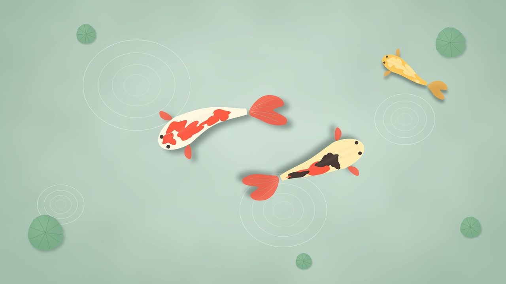
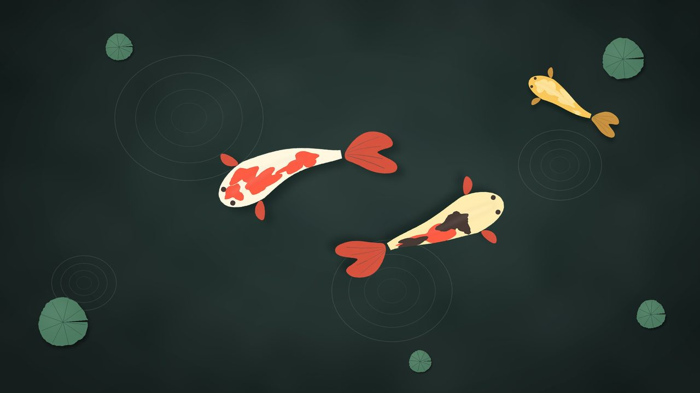
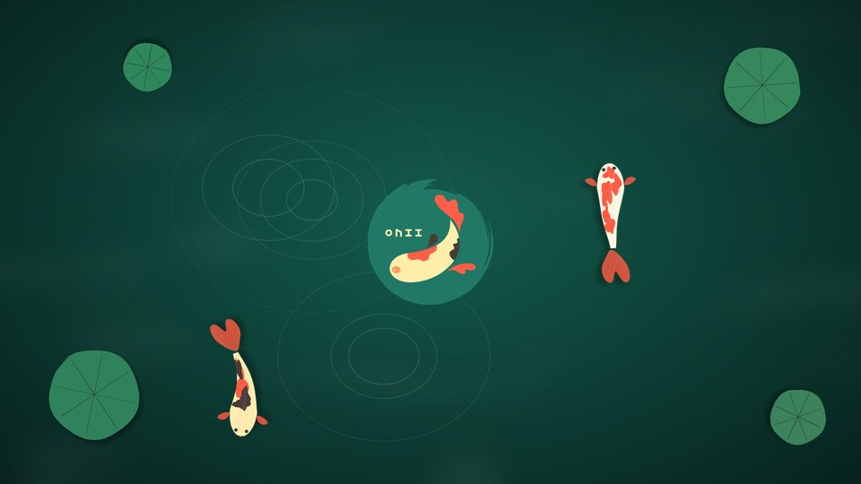
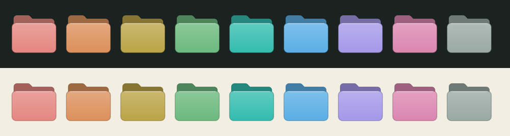

OweeKoi
Versión actual: v2Current version: v2
Un tema propio para KDE: tinta y papel, ondas de estanque, kois que nadan en el protector y carpetas de colores. Claro y oscuro, sin descargar nada de terceros. A hand-made KDE theme: ink and paper, pond ripples, koi swimming in the screensaver and colored folders. Light and dark, nothing downloaded from third parties.
Así se vePreview
Fondos del tema en modo claro y oscuro, la pantalla de inicio y las carpetas de colores.Theme wallpapers in light and dark, the splash screen and the colored folders.




Qué incluyeWhat's inside
Todo está hecho para Plasma 6 y se instala en tu carpeta personal, sin sudo.Everything is made for Plasma 6 and installs in your home folder, no sudo needed.
Colores claro y oscuroLight and dark colors
Esquemas OweeKoiLight y OweeKoiDark. Nunca negro ni blanco puro; el texto cumple contraste AA.OweeKoiLight and OweeKoiDark schemes. Never pure black or white; text meets AA contrast.
Iconos y carpetas de coloresIcons and colored folders
Tema de iconos propio y menú Color de carpeta en Dolphin.Own icon theme and a Folder color menu in Dolphin.
Estilo «Onda» de Plasma“Onda” Plasma style
Paneles, menús y diálogos con esquinas redondas y un halo de ondas en lugar de sombra pesada.Panels, menus and dialogs with rounded corners and a ripple halo instead of a heavy shadow.
Ventanas «Onda»“Onda” windows
Decorado de ventanas propio (Aurorae), en versión clara y oscura.Own window decoration (Aurorae), light and dark.
Protector de koisKoi screensaver
Los kois nadan al bloquear la pantalla y el fondo sigue al modo claro u oscuro.Koi swim when the screen locks, and the background follows light or dark mode.
Pantalla de inicioSplash screen
Animada, con el logo de Owee y los kois.Animated, with the Owee logo and the koi.
Punteros propiosOwn cursors
Flecha crema con ondas y el logo al cargar.Cream arrow with ripples and the logo while loading.
Barra superior tipo macOSmacOS-style top bar
Menú global y reloj centrado. Se puede omitir con --sin-barra.Global menu and centered clock. Skip it with --sin-barra.
Animaciones suavesSmooth animations
Magic Lamp al minimizar. owee-animaciones restaurar devuelve las tuyas.Magic Lamp when minimizing. owee-animaciones restaurar brings yours back.
Claro/oscuro por horaLight/dark by time
El comando owee-tema y un temporizador opcional que cambia de modo con la hora.The owee-tema command and an optional timer that switches mode by time of day.
Konsole, Kate y Qt CreatorKonsole, Kate and Qt Creator
Esquemas de sintaxis con contraste verificado (4,5:1 o más).Syntax schemes with verified contrast (4.5:1 or better).
Estilo de controles (opcional)Control style (optional)
Estilo Union de botones y campos, aún en desarrollo en KDE: se activa con owee-estilo.Union style for buttons and fields, still in development in KDE: enable it with owee-estilo.
RequisitosRequirements
Solo KDE Plasma 6KDE Plasma 6 only
No funciona en GNOME, XFCE ni otros escritorios. El instalador se detiene si detecta Plasma 5.Does not work on GNOME, XFCE or other desktops. The installer stops if it finds Plasma 5.
Probado enTested on
KDE neon (Ubuntu 24.04) con Plasma 6.8, sesión Wayland.KDE neon (Ubuntu 24.04) with Plasma 6.8, Wayland session.
HerramientasTools
Solo bash, git y los comandos de Plasma 6 (kwriteconfig6, plasma-apply-*).Just bash, git and the Plasma 6 commands (kwriteconfig6, plasma-apply-*).
InstalaciónInstallation
Tres pasos. El instalador respalda tu configuración antes de cambiar nada.Three steps. The installer backs up your settings before changing anything.
-
Guarda tu trabajoSave your work
Al aplicar el tema se cambian ajustes de GTK. En Ubuntu 24.04 un fallo de dconf puede cerrar de golpe navegadores y aplicaciones Electron. Se reabren sin problema.Applying the theme changes GTK settings. On Ubuntu 24.04 a dconf bug can suddenly close browsers and Electron apps. They reopen fine.
-
Descarga el temaGet the theme
Cada versión vive en su propia rama. La actual es
v2.Each version lives on its own branch. The current one isv2.git clone -b v2 https://github.com/oweeme/oweekoi.git cd oweekoi
-
Ejecuta el instaladorRun the installer
No hace falta ser root. Elige el modo con el que arranca:No root needed. Pick the mode it starts in:
./v2/instalar.sh --modo oscuro
Cierra sesión y vuelve a entrar para ver la pantalla de inicio y el protector.Log out and back in to see the splash screen and the screensaver.
plasma-apply-cursortheme OweeKoi-Punteros.apply it with plasma-apply-cursortheme OweeKoi-Punteros.Opciones del instaladorInstaller options
| OpciónOption | Qué haceWhat it does |
|---|---|
--modo claro|oscuro|auto | Modo con el que arranca. auto: claro de 07:00 a 19:00.Starting mode. auto: light from 07:00 to 19:00. |
--solo-archivos | Copia los archivos y no cambia tu configuración de Plasma.Copies the files and leaves your Plasma settings alone. |
--sin-barra | No toca la barra superior.Leaves the top bar alone. |
--sin-animaciones | No cambia las animaciones de KWin.Does not change KWin animations. |
--horario | Activa el temporizador de claro/oscuro por hora.Enables the light/dark timer. |
--simular | Muestra lo que haría, sin tocar nada.Shows what it would do, touching nothing. |
DesinstalarUninstall
Restaura la configuración que tenías antes (respaldo en ~/.local/share/oweekoi/) y quita los archivos del tema.Restores your previous settings (backup in ~/.local/share/oweekoi/) and removes the theme files.
./v2/desinstalar.sh
Uso diarioDaily use
| ComandoCommand | Para qué sirveWhat for |
|---|---|
owee-tema claro | oscuro | alternar | auto | Cambia el modo de todo el escritorio. auto usa ~/.config/oweekoi/horario.conf.Switches the whole desktop mode. auto uses ~/.config/oweekoi/horario.conf. |
owee-animaciones activar | restaurar | Activa las animaciones de OweeKoi o devuelve las tuyas.Turns OweeKoi animations on or restores yours. |
owee-estilo probar | activar | desactivar | Estilo de controles Union (opcional, en desarrollo).Union control style (optional, in development). |
| Clic derecho en una carpeta de Dolphin ▸ Color de carpetaRight-click a folder in Dolphin ▸ Folder color | Pinta la carpeta de uno de los colores del tema.Paints the folder one of the theme colors. |
Cada cambio de modo puede cerrar aplicaciones GTK por el mismo fallo de dconf: cámbialo cuando no tengas trabajo sin guardar.Each mode switch can close GTK apps because of the same dconf bug: switch when you have no unsaved work.
Pantalla de inicio de sesión (opcional)Login screen (optional)
El Plasma Login Manager no admite temas completos, solo un fondo estándar y los colores sincronizados. Este paso sí necesita sudo:The Plasma Login Manager does not accept full themes, only a standard wallpaper and synced colors. This step does need sudo:
sudo ./v2/login/instalar-login.sh
Luego, en Configuración del sistema ▸ Pantalla de inicio de sesión, elige «OweeKoi - Estanque (login)».Then in System Settings ▸ Login Screen, pick “OweeKoi - Estanque (login)”.
PersonalizarCustomize
Todo sale de una sola paleta. Cambias un color, regeneras y se actualiza el esquema, los iconos, las ventanas y los editores.Everything comes from a single palette. Change a color, regenerate, and the scheme, icons, windows and editors update.
nano v2/herramientas/paleta.py # colores claro y oscuro ./v2/regenerar.sh # regenera las piezas ./v2/instalar.sh # las instala
Para regenerar necesitas además python3, Pillow y xcursorgen. La receta completa, pieza por pieza, está en el manual y las trampas técnicas en las notas técnicas.To regenerate you also need python3, Pillow and xcursorgen. The full recipe, piece by piece, is in the manual and the technical gotchas in the technical notes (Spanish).
VersionesVersions
Las versiones nuevas se publican como ramas v1, v2, v3… Cada una se instala con su propio comando.New versions are published as branches v1, v2, v3… Each one installs with its own command.
| VersiónVersion | Qué esWhat it is | InstalarInstall |
|---|---|---|
| v2 (actual)(current) | Tema propio, sin WhiteSur: tinta y papel, ondas, carpetas de colores, claro y oscuro.A theme of its own, no WhiteSur: ink and paper, ripples, colored folders, light and dark. | git clone -b v2 …./v2/instalar.sh |
| v1 | Tema oscuro basado en WhiteSur con perfiles para portátil y PC (ahorro de energía, arranque rápido). Está en la rama main.Dark WhiteSur-based theme with laptop and PC profiles (power saving, fast boot). It is on the main branch. | git clone https://github.com/oweeme/oweekoi.git./install.sh |
AutorAuthor
Hector Martinez
Creador de OweeKoi y de Owee. Si encuentras un fallo o quieres proponer algo, escríbeme o abre un issue en GitHub.Creator of OweeKoi and Owee. If you find a bug or want to suggest something, write to me or open an issue on GitHub.